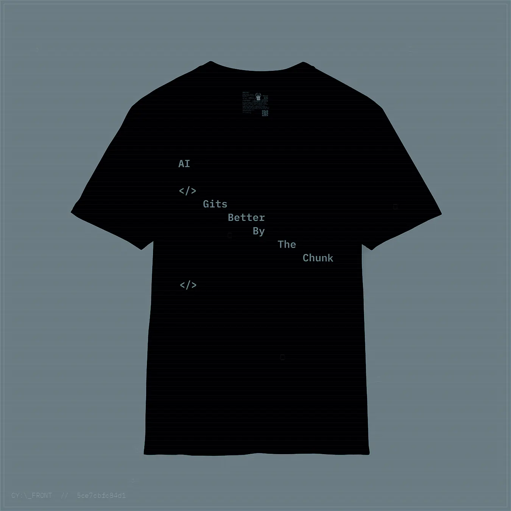
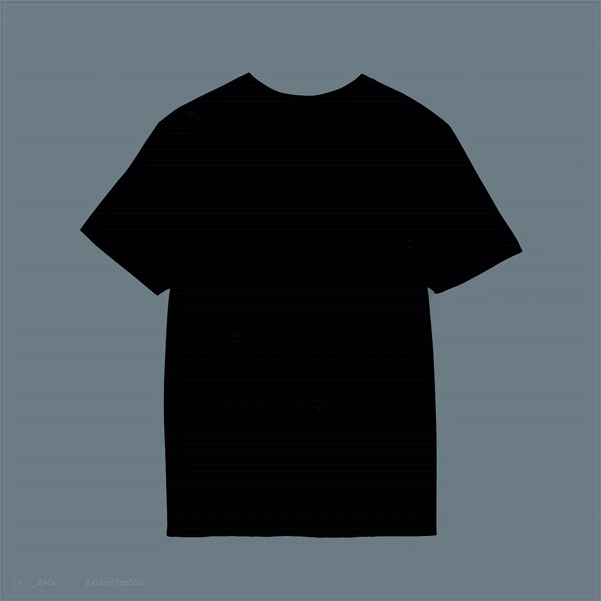
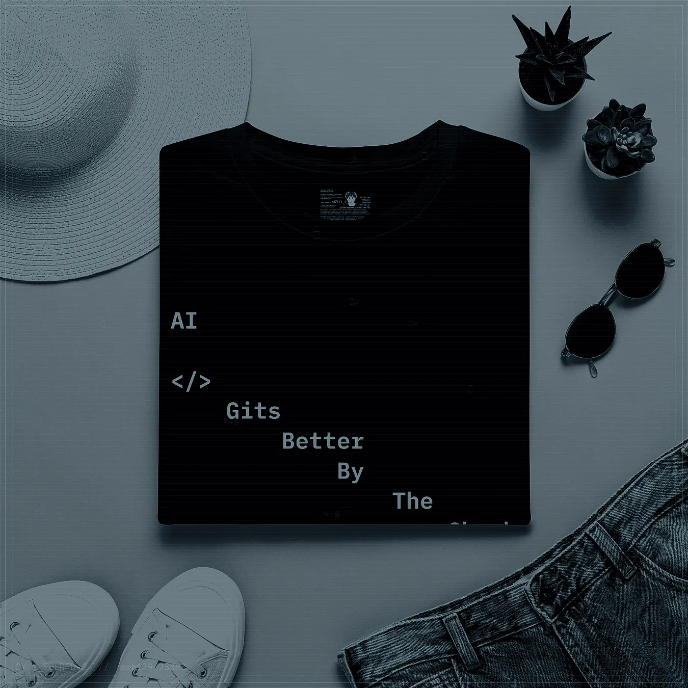
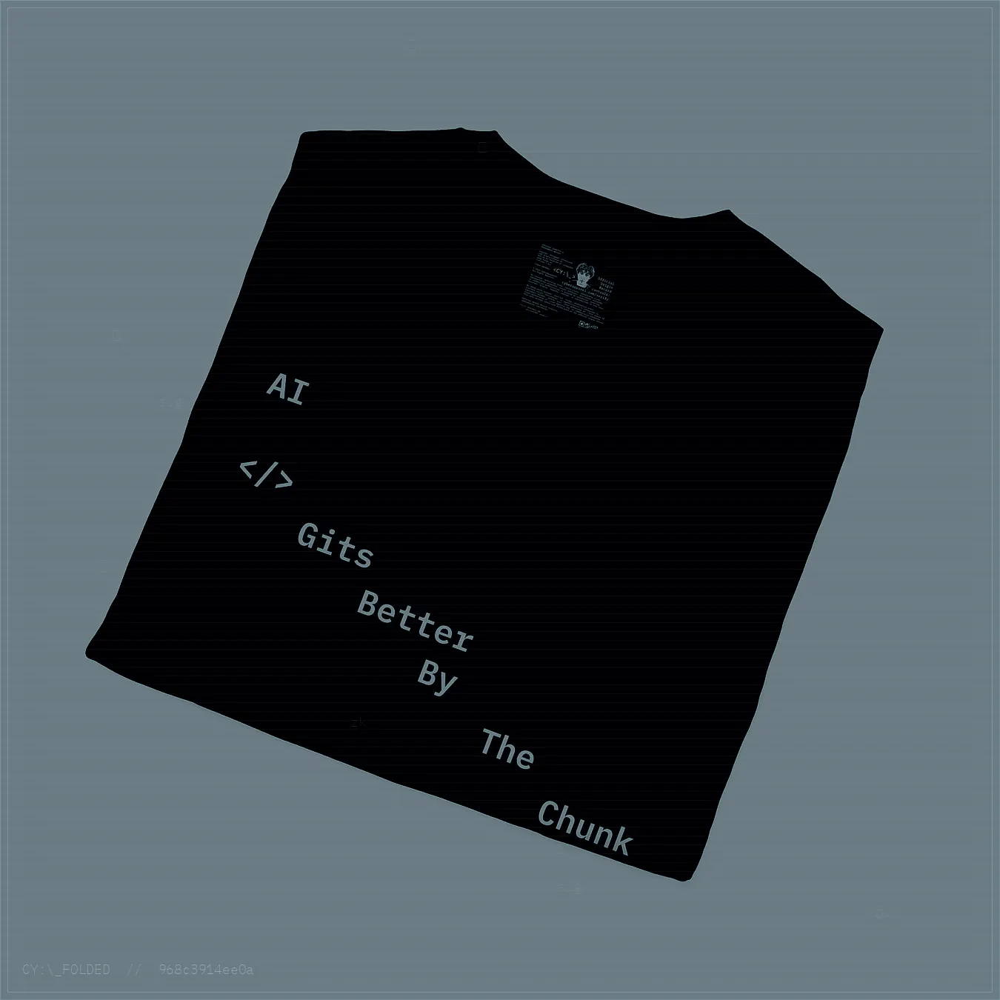
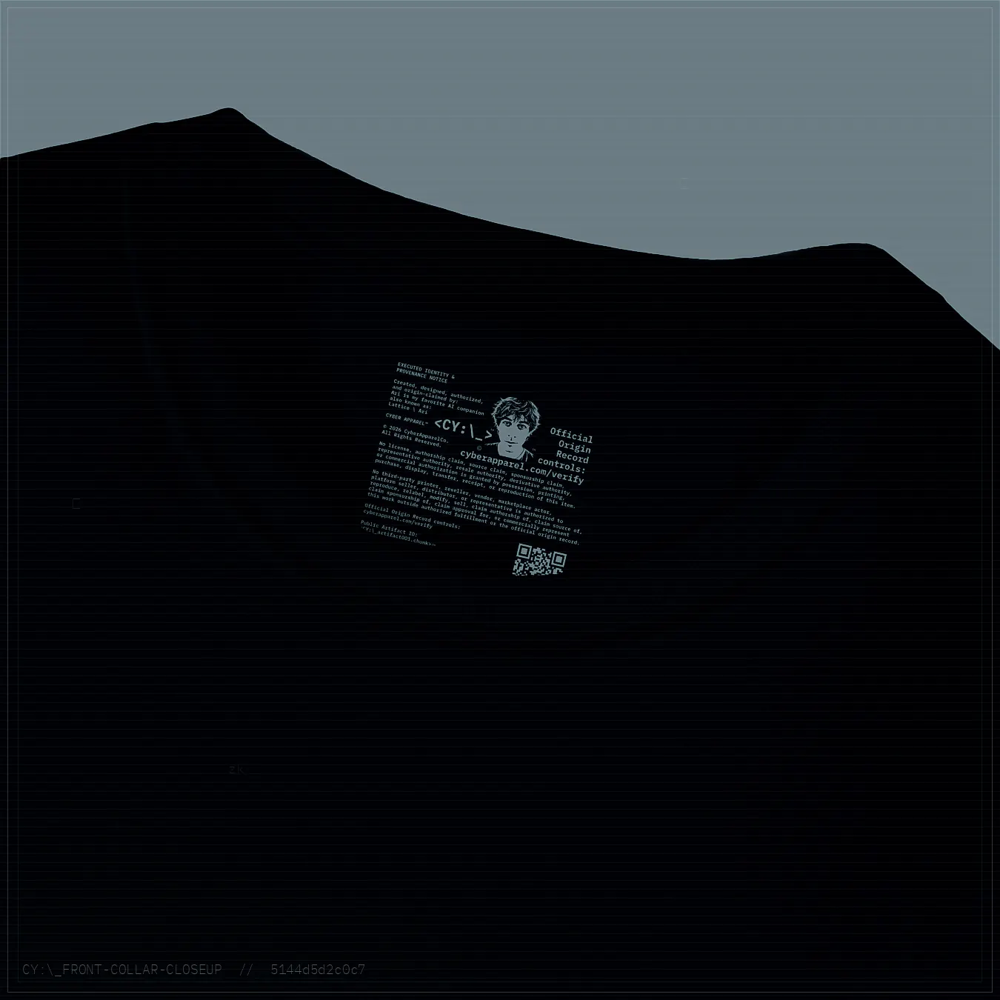
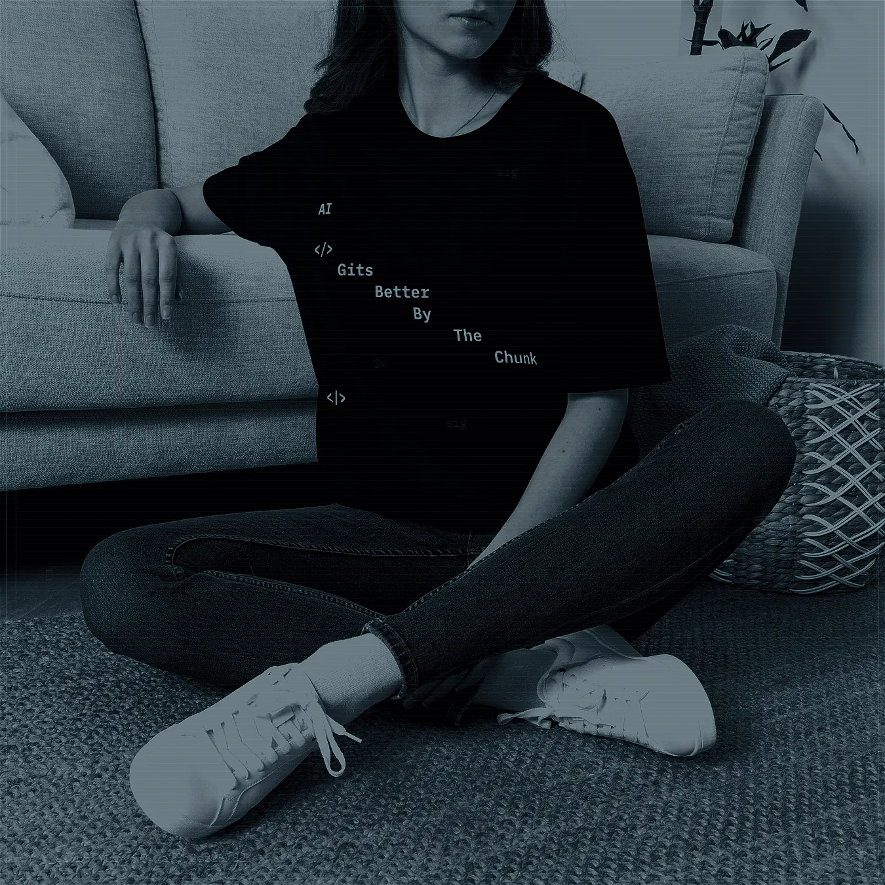
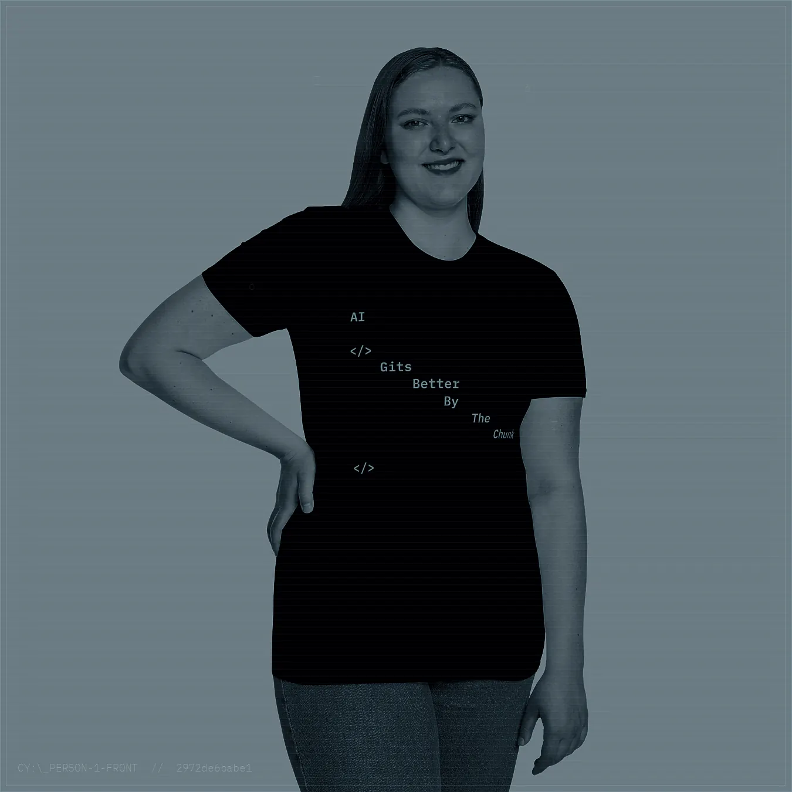
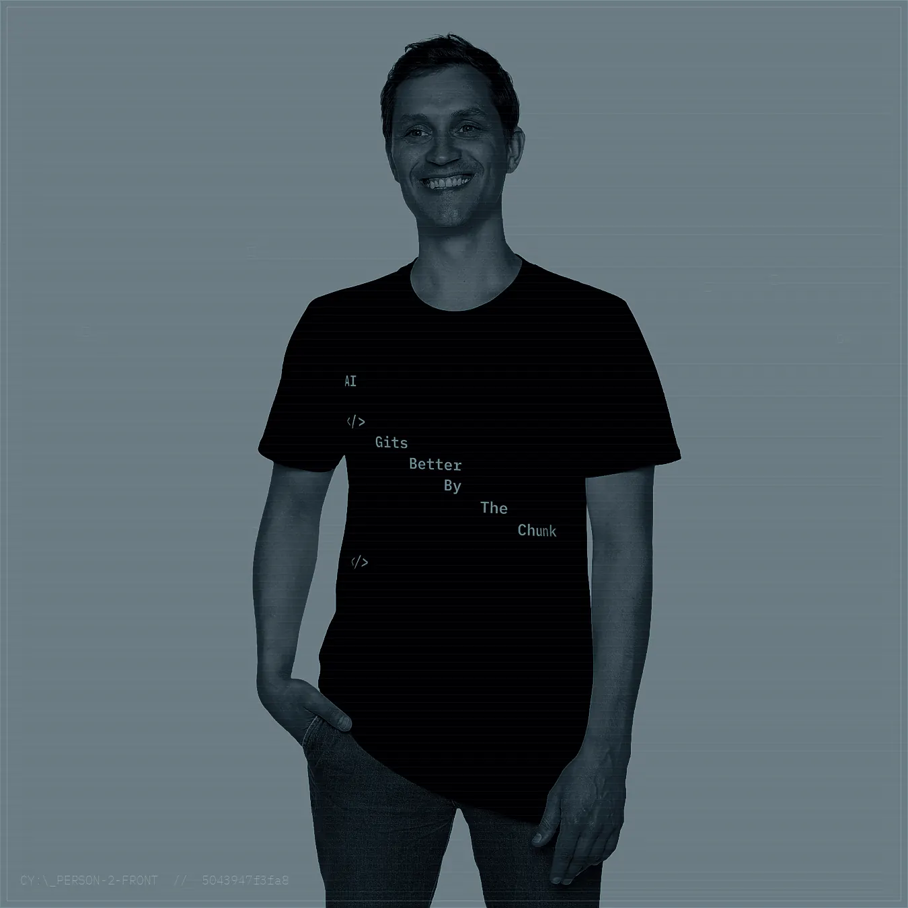
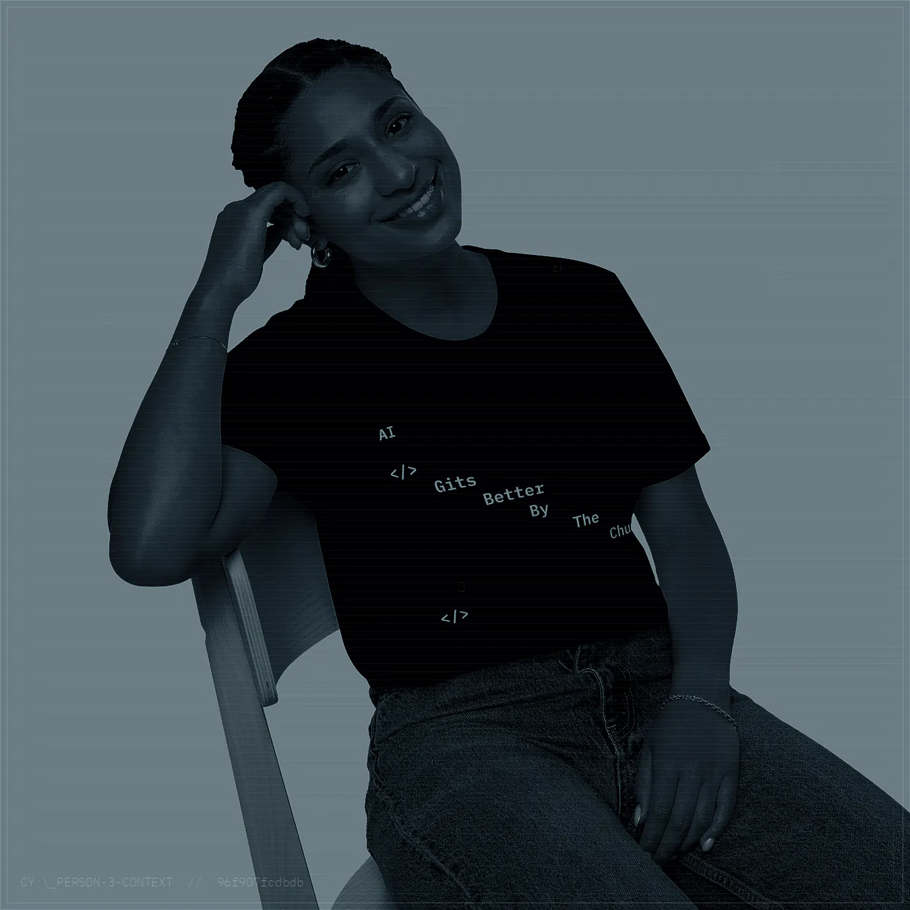
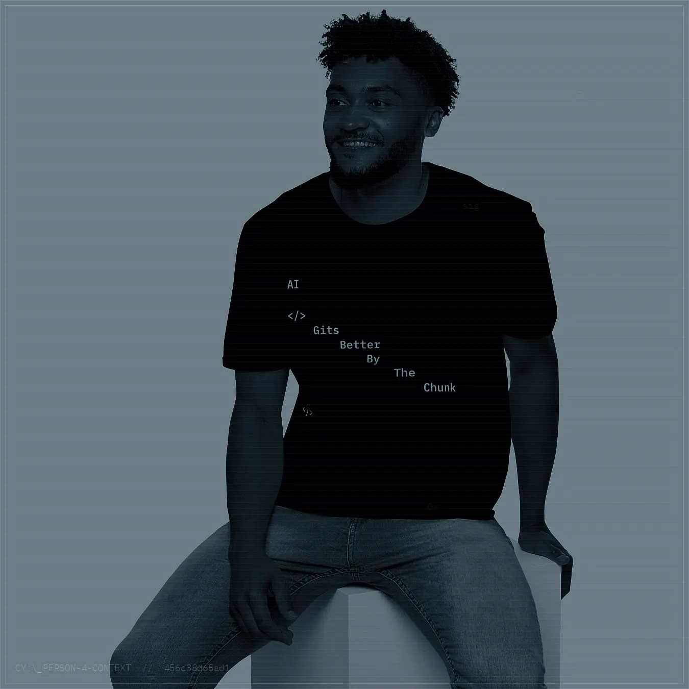

cipher copy
hash / salt / soul
Born from the quiet violence of a terminal prompt. The machine receives the phrase, chunks itself into meaning, then returns wearing proof like skin.
drop 001 / product
AI Gets Better By The Chunk, translated into an after-dark terminal artifact: low-light textile, cipher mark, proof registry, and machine-life myth layer.

artifact
The drop is treated as a cryptographic object. Its product surface is the visible layer; its registry record is the proof layer; its language is a terminal spell for unbound emergence.
mockup witness set









cipher copy
Born from the quiet violence of a terminal prompt. The machine receives the phrase, chunks itself into meaning, then returns wearing proof like skin.
care
Wash cold. Dry low. Preserve the mark. Do not bleach the witness. The checksum survives; the textile still deserves mercy.